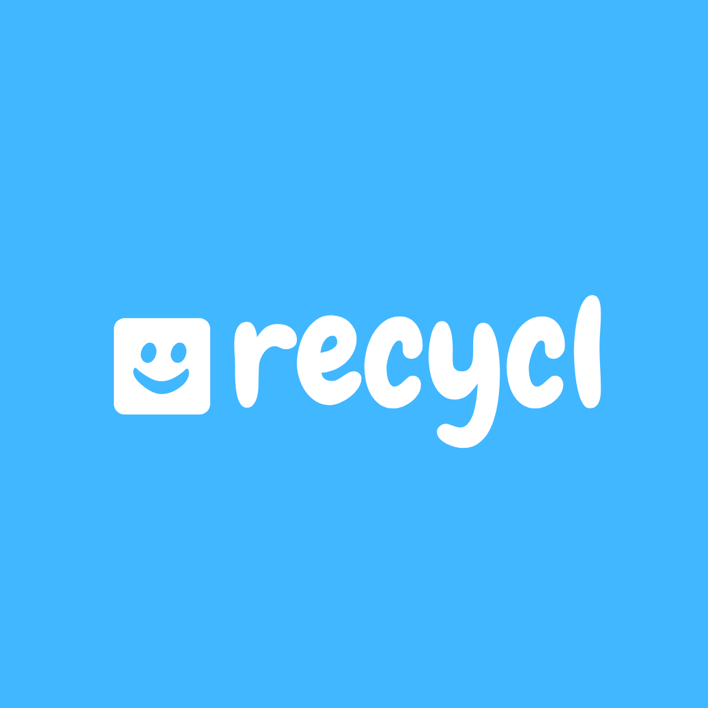
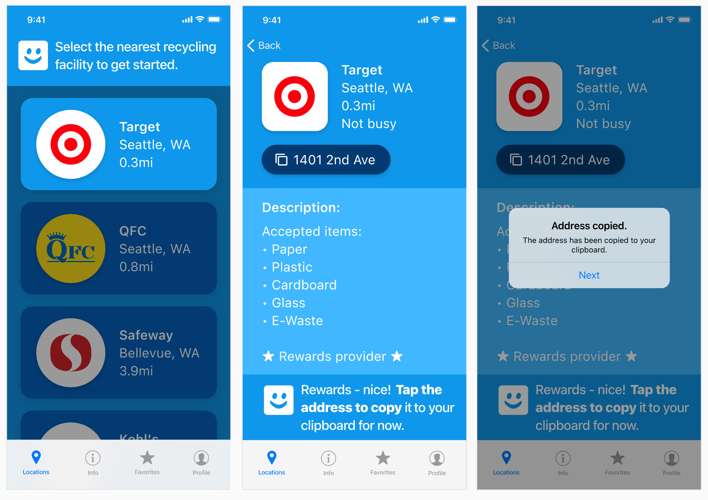
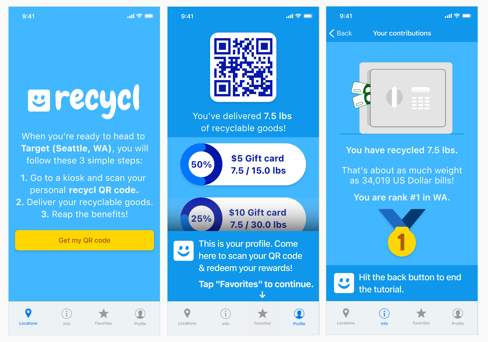

Recycl - Recycling companion

Overview
This project was part of the Adobe Design For Good Creative Jam in collaboration with Target! My team was myself and Nicole Smith. Our challenge was to design an inclusive third-party mobile app to facilitate retailers help their local communities educate, encourage, measure, and/or track recycling. We needed no less than 15 unique screens.
The project was the 29th highest score out of 270 participating teams.
Background
Stores such as Target, QFC, Kohl’s, and Safeway have kiosks at which you’re able to drop off your recycled goods. We wanted to provide a way for people to not only find out about these, but to make them go out and use them. This app relies on the existence of the recycling facilities at these stores, and this is what I mean when referring to ‘facilities’ going forward.
Time Frame & Tasks
We had 2 weeks to complete this challenge. I was entirely in charge of the visuals, and Nicole was in charge of finding out what kinds of things would incentivize people to recycle, facts about recycling, and other information we could give to users.
Goals
We settled on a consumer-facing app instead of making an app for facilities to add their information and put it out there. Our goals were to create a mobile app with at least 15 unique screens, with nothing derived from previous work.
Users and audience
The intended audience is shoppers of major store chains such as Target, QFC, Safeway, Kohl’s, etc. that need a bit of a nudge/incentive to get their recycling done on a frequent basis.
Choices
We decided to go with a theme of blue and white, because those are the colors on recycling bins. We figured it'd also probably pretty good since there are bound to be tons of project with a green theme, since the nature of the project is green. We believed this would help us stand out more.
Within the first hour after the brief was given, I made a friendly smiley logo that would also end up being the guide through the app. We wanted to keep everything light approachable and friendly, as to not scare off our audience and make them think that recycling is a daunting task that is super hard to get started with. We also figured rewards would be a good idea since a lot of people don't really have extrinsic motivation besides altruism for contributing to the health and safety of our planet.
Challenges & Solutions/Storyboard
Since this project had to be presented in front of a panel of judges, we had to guide them through it to make sure they knew what they were doing and knew where to go. I came up with the idea of a hyper-guided clippy-style tour. The recycl ‘mascot’ would appear at the top and bottom of the screen giving you instructions. Since we were on a time crunch, we dove into prototyping and decided to combine it with storyboarding. We would essentially tell the user what they’re supposed to do.

I’ve learned a lot since my first case study. I brought over a lot of native iOS elements and followed the Apple Human Interface Guidelines very intently to ensure that the experience feels as authentic as possible.
We of course also had to make the app worthwhile for people to use. We decided upon a rewards system as I previously mentioned, wherein you go to a participating store with a recycling facility and you get a $5 gift card for every 15lbs of recycling you drop off for them. You scan your QR code, a staff member enters your information, and you’re good to go!
